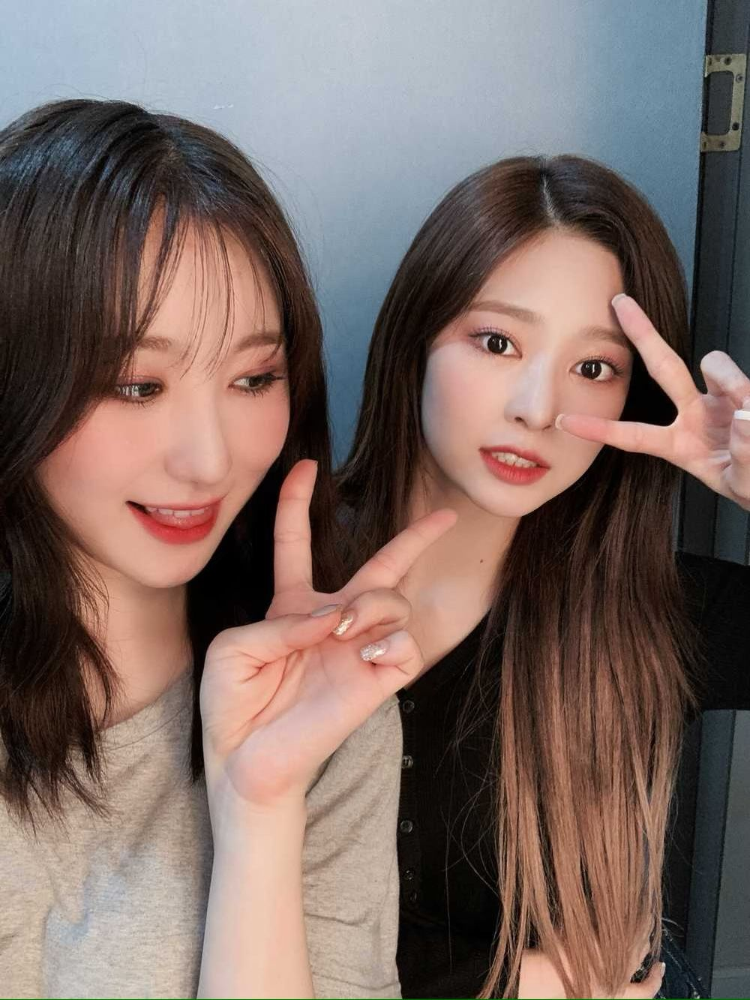
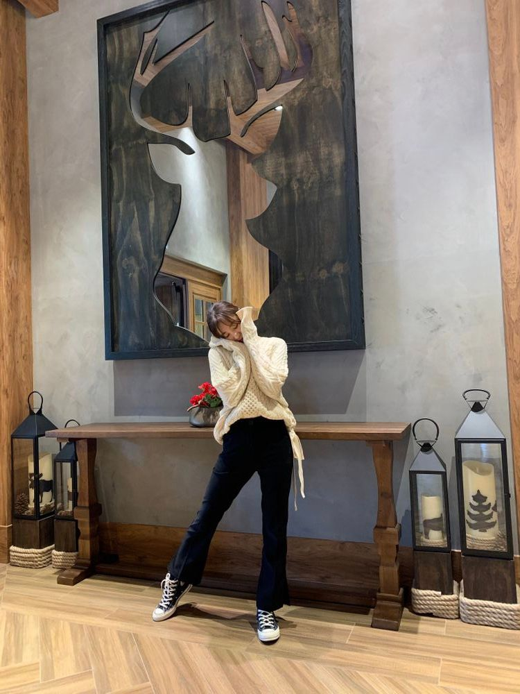

저번에
가사 쓰다가
한 글자 뭘 쓰면 좋을 까 하고
제가 물어봤었잖아요
진짜 여러 아이디어를 말해주신 덕분에
도움이 많이 되었어요ㅋㅋㅋㅋㅋㅋ
근데 아무래도 어려웠죠 그죠잉
이번엔 선택형으로 가볼까봐요 ㅋㅋㅋㅋㅋㅋㅋ
떠넘기는 거 ㅋㅋㅋㅋㅋㅋ 절대 아니구욬ㅌㅋㅋㅋㅋㅋㅋㅋ
혼자 쓰면 점점 ㅋㅋㅋㅋㅋㅋ판단력이 사실 없어져서
객관적인 제 3자의 시선이 필요한 것 같아요
아무튼 어떤 가사가 마음에 더 와닿는지...?
궁금해서~~~물어봅니다!!!!
1. 살며시 다가와 날 안아줘
2. 조용히 내 손을 이끌어줘
잘 참고할게요잉🙈
